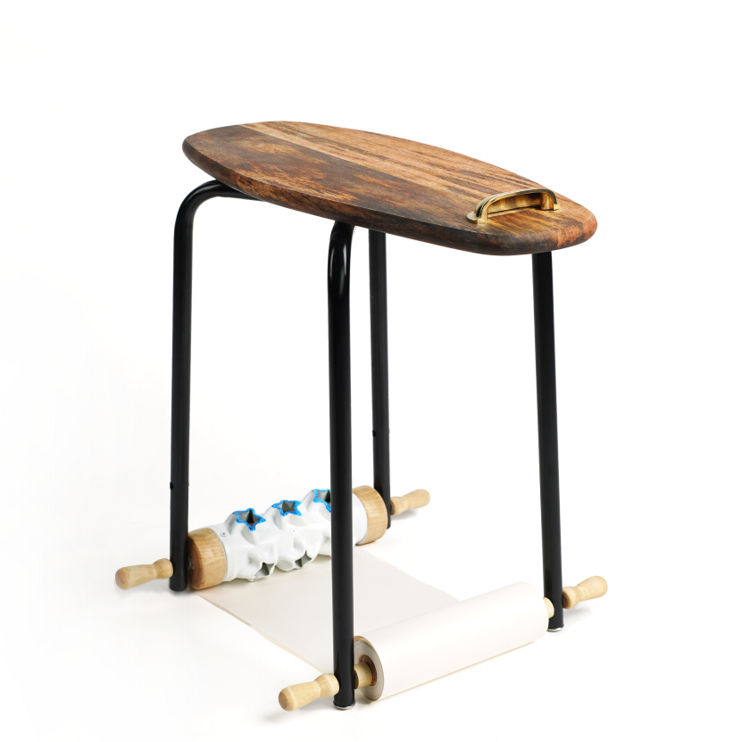

Painting Stool

凳子的设计思路从黑客精神出发，试图将凳子变为一种人可以通过坐下和移动的行为来证明自身存在的工具。在凳子向前移动时，后腿上的印花滚轮可以在前腿的画纸上留下有趣的图案。
The idea of the stool is based on the spirit of hackers, trying to turn the stool into a tool for people to prove their existence by sitting and moving. The stool is named because it looks like a beetle. As the stool moves forward, the printed rollers on the hind legs leave interesting patterns on the drawing paper roll on the front legs.